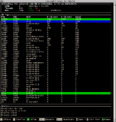

LTTng 2.0: Tracing for power users and developers - part 2
In part 1 of this article, we presented the motivations that led to the creation of LTTng 2.0, its features, along with an overview of the respective strengths of LTTng 2.0, Perf, and Ftrace. We then presented two LTTng 2.0 usage examples.
In this article, we will start with two more advanced usage examples, and then proceed to a presentation of LTTngTop, a low-overhead, top-alike view, based on tracing rather than sampling /proc. This article focuses on some of the "cool features" that are made possible with the LTTng 2.0 design: combined tracing of both kernel and user space, use of performance counters to augment trace data, and combining all these together to generate a higher-level view of the system CPU and I/O activity with LTTngTop. But first, we continue with the examples:
3. Combined user space and kernel tracing
This example shows how to gather a trace from both the kernel and a user-space application. Even though the previous examples focused only on kernel tracing, LTTng 2.0 also offers fast user-space tracing support with the "lttng-ust" (LTTng User-space Tracer) library. For more information on how to instrument your application, see the lttng-ust(3) and lttng-gen-tp(1) man pages.
The hello.c test program is distributed with the lttng-ust source. It has an example tracepoint that associates various types of data with the tracepoint. The tracepoint data, including all of the different types can be seen below in the first instance of hitting the tracepoint.
# (as root, or tracing group)
$ lttng create
$ lttng enable-event --kernel --all
$ lttng enable-event --userspace --all
$ lttng start
$ cd lttng-ust/tests/hello
$ ./hello # Very, very high-throughput test application
$ sleep 10 # [ let system generate some activity ]
$ lttng stop
$ lttng view
$ lttng destroy
Output from lttng view:
[...]
[18:47:03.263188612] (+0.000018352) softirq_exit: { cpu_id = 1 }, { vec = 4 }
[18:47:03.263193518] (+0.000004906) exit_syscall: { cpu_id = 1 }, { ret = 0 }
[18:47:03.263198346] (+0.000004828) ust_tests_hello:tptest: { cpu_id = 3 }, { \
intfield = 1676, intfield2 = 0x68C, longfield = 1676, \
netintfield = 1676, netintfieldhex = 0x68C, arrfield1 = [ [0] = 1, [1] = 2, \
[2] = 3 ], arrfield2 = "test", _seqfield1_length = 4, \
seqfield1 = [ [0] = 116, [1] = 101, [2] = 115, [3] = 116 ], \
_seqfield2_length = 4, seqfield2 = "test", stringfield = "test", \
floatfield = 2222, doublefield = 2 }
[18:47:03.263199453] (+0.000001107) sys_write: { cpu_id = 3 }, { fd = 18, \
buf = 0x7F5C935EAD4D, count = 1 }
[18:47:03.263200997] (+0.000001544) sys_poll: { cpu_id = 1 }, { ufds = 0x1C9D8A0, \
nfds = 6, timeout_msecs = -1 }
[18:47:03.263201067] (+0.000000070) exit_syscall: { cpu_id = 3 }, { ret = 1 }
[18:47:03.263204813] (+0.000003746) ust_tests_hello:tptest: { cpu_id = 3 }, { \
intfield = 1677, [...] }
[18:47:03.263207406] (+0.000002593) ust_tests_hello:tptest: { cpu_id = 3 }, { \
intfield = 1678, [...] }
[...]
In short, the output above shows that CPU 1 is executing the end of a softirq handler, CPU 3 is in user mode within the "hello" test application, writing its high-throughput event to the buffer. This example is taken at the moment the buffer switch occurs within the LTTng-UST tracer, so the application signals the consumer daemon waiting on poll() on CPU 1 that data is ready. The "hello" test application then continues writing into its tracing buffer.
Correlated analysis of events coming from both the kernel and user space, gathered efficiently without round-trips between the kernel and user space, enables debugging systemic problems across execution layers. User-space instrumentation with the LTTng-UST tracepoint event API, and the use of trace log-levels in combination with wildcards, are not covered here for brevity, but you can look at the lttng(1) man page if you are curious.
4. Performance counters and kretprobes
This example shows how to combine kernel instrumentation mechanisms to get information that is otherwise unavailable. In this case, we are interested in the number of LLC (Last Level Cache) misses produced by each invocation of a function in the Linux kernel. We arbitrarily chose the function call_rcu_sched().
First, it is important to measure the overhead produced by kretprobes, reading the performance monitoring unit (PMU), and tracing with LTTng to understand how much of the total count can be attributed to the tracing itself. LTTng has a "calibrate" command to trigger calibration functions which, when instrumented, collect the base cost of the instrumentation.
Here is an example showing the calibration, using an i7 processor with 4 general-purpose PMU registers. The information about PMU registers can be found in the kernel boot messages under "Performance Events", then look for "generic registers". Note that some registers may be reserved by the kernel NMI watchdog.
This sequence of commands will gather a trace executing a kretprobe hooked on an empty function that gathers the LLC-misses information (see lttng add-context --help to get a list of the available PMU counters).
$ lttng create calibrate-function
$ lttng enable-event calibrate --kernel --function lttng_calibrate_kretprobe
$ lttng add-context --kernel -t perf:LLC-load-misses -t perf:LLC-store-misses \
-t perf:LLC-prefetch-misses
$ lttng start
$ for a in $(seq 1 10); do \
lttng calibrate --kernel --function;
$ done
$ lttng stop
$ lttng view
$ lttng destroy
The output from babeltrace can be analyzed to look at the per-PMU counter delta between consecutive "calibrate_entry" and "calibrate_return" events. Note that these counters are per-CPU, so scheduling events need to be present in the trace to account for migration between CPUs. Therefore, for calibration purposes, only events staying on the same CPU should be considered.
The average result, for the i7, on 10 samples:
Average Std.Dev.
perf_LLC_load_misses: 5.0 0.577
perf_LLC_store_misses: 1.6 0.516
perf_LLC_prefetch_misses: 9.0 14.742
As can be seen, the load and store misses are relatively stable across runs (their standard deviation is relatively low) compared to the prefetch misses. We can conclude from this information that LLC load and store misses can be accounted for quite precisely by removing the calibration base-line, but pre-fetches within a function seem to behave too erratically (not much causality link between the code executed and the CPU pre-fetch activity) to be accounted for.
We can then continue with our test, which was performed on a 2.6.38 Linux kernel, on a dual-core i7 SMP CPU, with hyperthreading (the same system that was calibrated above):
$ lttng create measure-call-rcu-sched
$ lttng enable-event call_rcu_sched -k --function call_rcu_sched
$ lttng add-context --kernel -t perf:LLC-load-misses -t perf:LLC-store-misses \
-t perf:LLC-prefetch-misses
$ lttng start
$ sleep 10 # [ let system generate some activity ]
$ lttng stop
$ lttng view
$ lttng destroy
Here is some sample output using:
$ lttng view -e 'babeltrace --clock-raw --no-delta'
timestamp = 37648.652070250,
name = call_rcu_sched_entry,
stream.packet.context = { cpu_id = 1 },
stream.event.context = {
perf_LLC_prefetch_misses = 3814,
perf_LLC_store_misses = 9866,
perf_LLC_load_misses = 16328
},
event.fields = {
ip = 0xFFFFFFFF81094A5E,
parent_ip = 0xFFFFFFFF810654D3
}
timestamp = 37648.652073373,
name = call_rcu_sched_return,
stream.packet.context = { cpu_id = 1 },
stream.event.context = {
perf_LLC_prefetch_misses = 3815,
perf_LLC_store_misses = 9871,
perf_LLC_load_misses = 16337
},
event.fields = {
ip = 0xFFFFFFFF81094A5E,
parent_ip = 0xFFFFFFFF810654D3
}
An analysis of the 1159 entry/return pairs on CPU 1 that did not migrate between processors yields:
Average Std.Dev.
perf_LLC_load_misses: 4.727 6.371
perf_LLC_store_misses: 1.280 1.198
perf_LLC_prefetch_misses: 1.662 4.832
So the numbers we have here are within the range of the empty function calibration. We can therefore say that call_rcu_sched() is doing a good job at staying within the Last Level Cache. We could repeat the experiment with other kernel functions, targeting L1 misses, branch misses, and various other PMU counters.
LTTngTop

LTTngTop is a ncurses-based tool developed to provide system administrators with a convenient way to browse traces and quickly find a problem, or at least a period of time when a problem occurred. That information considerably reduces the number of events we need to analyze manually. It is designed to suit the system administrators because it behaves like the popular top CPU activity monitoring program. In addition to the usual behavior of top and similar tools, where the display is refreshed at a fixed interval, LTTngTop allows the user to pause the reading of the trace to take time to look at what is happening, and also to go back and forth in time to easily see the evolution between two states.
In order to properly handle the events without the risk of attributing statistics to the wrong process in case of a lost event, we require that the events be self-describing. For use with LTTngTop, it is required that each event include the process identifier (PID), the process name (procname), the thread identifier (tid), and parent process identifier (ppid), all of which can be done using the context information. Although adding this data makes the trace bigger, it ensures that every event is handled appropriately, even if LTTng needs to discard some events (which can happen if the trace sub-buffers are too small).
As of now, LTTngTop only works with recorded traces, but work is in progress to support live tracing. The tool displays statistics such as the CPU usage time, the PMU counters (real data per-process, not sampled), and the I/O bandwidth. By default it reads one second of trace data and refreshes the display every second which gives the feeling of playing back the activity on the system. The intended usage of this tool is to allow non-developers (especially system administrators) to use trace data and to help pinpoint the period of time when a problem occurred on the system.
In the following example, we record a trace suitable for analysis with LTTngTop (with pid, procname, tid, ppid context information associated with each event) and with three PMU counters.
$ lttng create
$ lttng enable-event --kernel --all
$ lttng add-context -k -t pid -t procname -t tid -t ppid \
-t perf:cache-misses -t perf:major-faults \
-t perf:branch-load-misses
$ lttng start
$ sleep 10 # [ let system generate some activity ]
$ lttng stop
$ lttng destroy
$ lttngtop /path/to/the/trace
With this example, you will see exactly the activity that occurred on the system, and can use the left and right arrows on the keyboard to navigate forward and backward in the history. As noted above, work is in progress to support live trace reads. It will be performed through a shared memory map on the local machine, and eventually should support viewing live traces streamed from a remote target. LTTngTop is still in development mode but is usable, it can be found in the Git tree, and the README explains how to get it up and running.
Upstreaming: The road ahead
We really hope that the LTTng features will gradually make their way into the upstream kernel. Our target with LTTng 2.0 has been to ensure that our user base quickly gets access to the features provided by LTTng 2.0 through their Linux distributions, without having to wait for the upstreaming process to come to completion.
It remains to be discussed whether the LTTng-specific focus on integrated, low-overhead, full-system tracing, and its ability to share tools with various industry players, make strong enough arguments to justify merging its ABI into the Linux kernel. Nevertheless, our goal is to share the common pieces of infrastructure with Perf and Ftrace whenever it is beneficial for all of the projects to do so.
Conclusion
The very low overhead and high-scalability of the LTTng tracer makes it an excellent choice to tackle issues on high-availability, low-latency, production servers dealing with high-throughput data. The tracer flexibility allows combining traces gathered from both kernel and user space to be analyzed on a common time-line.
LTTng has been used to debug performance, behavior, and real-time issues at various client sites. Some examples include using the kernel tracer to identify an abnormally long interrupt handler duration and to pinpoint the cause of delays in a soft real-time system due to a firmware bug. At the I/O level, identification of bottlenecks caused by combined fsync() calls and large logs being written by timing-sensitive services was made possible by use of tracing. Another client example was one that experienced slowdowns and timeouts after moving from a local to a distributed filesystem: identifying much longer I/O requests in the distributed setup using the LTTng kernel tracer allowed us to pinpoint a filesystem cache that was too small as the root cause of the problem.
We are currently working on several features for LTTng 2.1: integration of flight recorder "snapshots" into lttng-tools, live trace streaming over the network, system-wide LTTng-UST buffers, and filtering of LTTng-UST event fields at trace collection time. With these features and others down the road on top of the existing LTTng 2.0 base, we hope to succeed in our goal to make developers' and system administrators' lives easier.
[ Mathieu Desnoyers is the CEO of EfficiOS Inc., which also employs
Julien Desfossez and David Goulet. LTTng was created under the
supervision of Professor Michel R. Dagenais at Ecole Polytechnique de
Montréal, where all of the authors have done (or are doing)
post-graduate studies. ]
| Index entries for this article | |
|---|---|
| Kernel | Development tools/Kernel tracing |
| Kernel | Tracing |
| GuestArticles | EfficiOS, Inc |
Posted Apr 21, 2012 14:18 UTC (Sat)
by kleptog (subscriber, #1183)
[Link]
Posted May 29, 2012 20:23 UTC (Tue)
by robert.berger (guest, #69236)
[Link] (1 responses)
+ sudo lttng add-context -k -t perf:LLC-load-misses -t perf:LLC-store-misses -t perf:LLC-prefetch-misses
Posted Aug 23, 2012 12:56 UTC (Thu)
by compudj (subscriber, #43335)
[Link]
Performance Events: PEBS fmt1+, generic architected perfmon, Intel PMU driver.
In this case, my processor supports 4 concurrent performance counters. (for reference, cpuinfo: model name : Intel(R) Core(TM) i7-3520M CPU @ 2.90GHz). So try removing one of the perf counters and it should be fine.
LTTng 2.0: Tracing for power users and developers - part 2
LTTng 2.0: Tracing for power users and developers - part 2
PERROR: add context ioctl: Invalid argument [in kernel_add_channel_context() at kernel.c:45]
Error: perf:LLC-prefetch-misses: Add kernel context failed
kernel context perf:LLC-store-misses added to all channels
kernel context perf:LLC-load-misses added to all channels
Warning: Some command(s) went wrong
LTTng 2.0: Tracing for power users and developers - part 2
... version: 3
... bit width: 48
... generic registers: 4 <------------------
... value mask: 0000ffffffffffff
... max period: 000000007fffffff
... fixed-purpose events: 3
... event mask: 000000070000000f